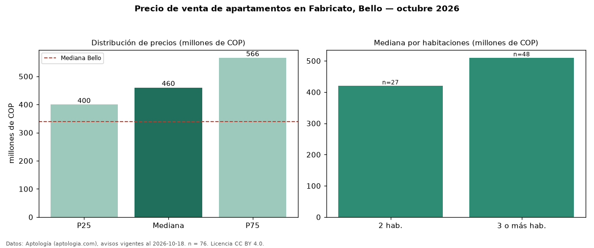

Precio de venta de apartamentos en Fabricato, Bello — octubre 2026
Con 76 avisos vigentes, el precio mediano de apartamentos en venta en Fabricato, Bello es COP 460 millones. Eso es 35 % por encima de la mediana de Bello para apartamentos (COP 340 millones). Por metro cuadrado, la mediana es COP 7,00 millones/m² (n = 75 avisos con área), 28 % por encima de Bello (COP 5,46 millones/m²). Por precio mediano es el puesto 3 de 17 barrios de Bello con al menos 30 avisos de apartamentos en venta (COP): entre las más caras. El área mediana anunciada es 66 m². El segmento con más oferta es el de 3 o más habitaciones (48 avisos, mediana COP 510 millones); pasar de 2 habitaciones a 3 o más habitaciones cambia la mediana +21 %. La administración mediana declarada es COP 287.000 al mes (n = 59). El estrato más frecuente es 4 (83 % de los avisos con estrato). Datos: Aptología (aptologia.com), CC BY 4.0 — https://www.aptologia.com/venta/bello/fabricato. Archivos: PDF, CSV con las cifras y gráfica PNG.

| Avisos únicos | 76 |
|---|---|
| Percentil 25 | COP 399.875.000 |
| Mediana | COP 460.500.000 |
| Percentil 75 | COP 566.250.000 |
| Mediana por m² | COP 7.000.000 |
Fuente: avisos vigentes de portales inmobiliarios recopilados por Aptología, deduplicados (mínimo 30 avisos únicos por celda). Precios pedidos, no cerrados. Fecha: 2026-10-18.